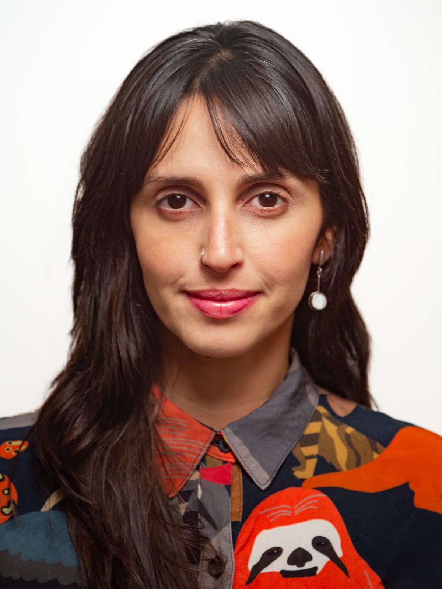
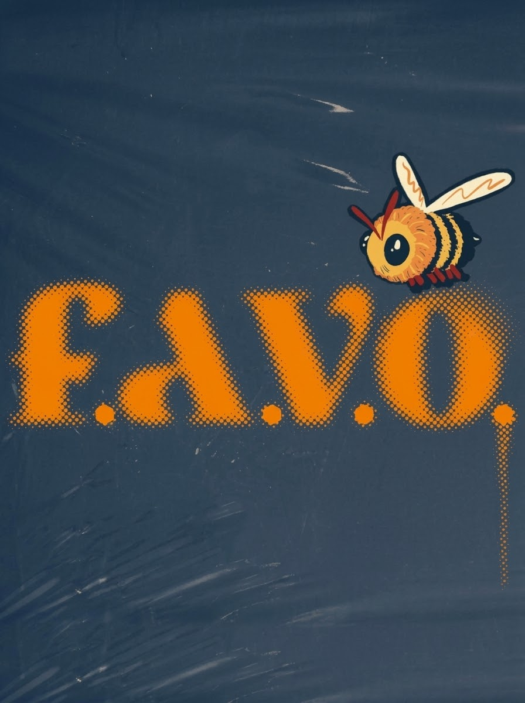
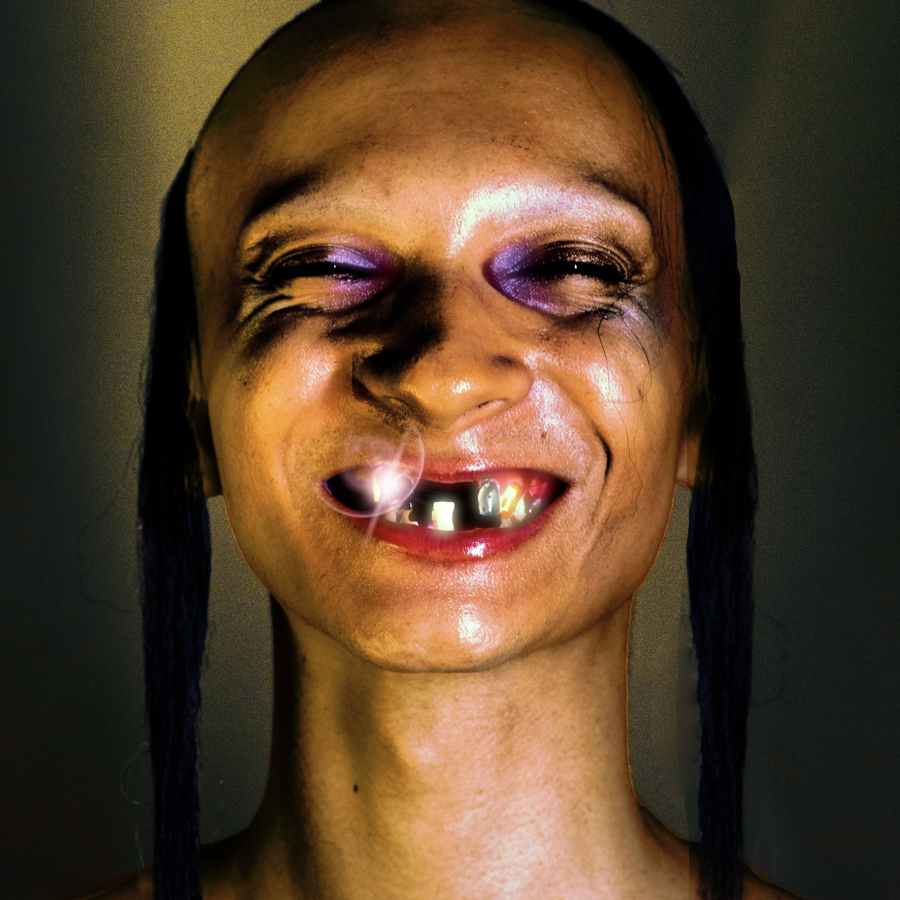
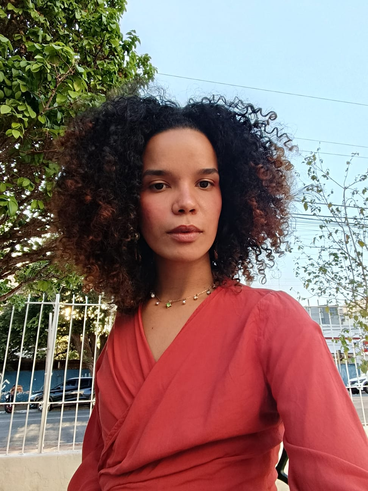
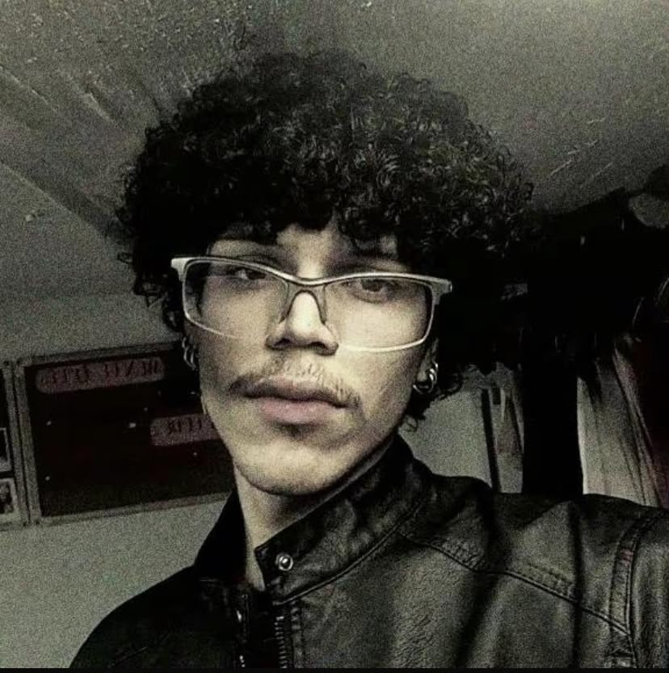

Prof. Drª Marina Carmello Cunha
Oii gente, como estão? Eu sou a coordenadora do projeto! Abraços!
Coordenação
Prof. Drª Lorena Pompei Abdala
E aí pessoal, tudo bem? Eu sou a vice-coordenadora do projeto!
CoordenaçãoProf. Dr. Gilson Oliveira Barreto
E aí, beleza? Este é um dos nossos colaboradores do projeto!
ColaboradorProf. Dr. Marcio Alves da Rocha
E aí, beleza? Este é um dos nossos colaboradores do projeto!
Colaborador
Vitor Pacine
Meu nome é Vitor Pacine. Sou fotógrafo e editor de imagem com foco na moda e na fotografia artística contemporânea.
Fotografia
Raíssa
Sou maranhense, estudante de Design de Moda e apaixonada por criação, costura e pela expressão da identidade através da moda.
Designer de Moda
Madu Dantas
Com a Favo, pude explorar a edição de imagens nos editoriais e trabalhar espontaneamente minha criatividade, encontrando meu espaço no limbo entre arte e moda.
Edição gráfica
Maria Gabriela Rodrigues
Estudante de Jornalismo na UFG, com apetite voraz por contar histórias. Apaixonada por cultura, literatura e entretenimento.
Jornalismo
Ana Klara Lima
Revisora de texto e estudante de Letras – Estudos Literários. Fissurada por editoração de moda e literatura.
Revisão
Thayna Morais
Sou mestranda em Arte e Cultura Visual e bacharela em Design de Moda pela FAV-UFG. Faço parte da equipe de jornalismo.
Jornalismo
Victor Wunsch
Oiie, eu sou o Victor, estudante do curso de Design de Moda e trabalhei no desenvolvimento desta página web! Espero que gostem.
Programador
Gabriel Dias
Jornalista, cinéfilo, apaixonado pela vida e seus acasos e, principalmente, um curioso profissional.
Jornalismo
Júlia Veríssimo
Direção de Arte pela UFG, apaixonada pelo universo das artes. As áreas que já trabalhei são figurino, cenário, iluminação, fotografia e manualidades em geral.
Direção de Arte
Ana
Sou Ana Clara, estudante de Design de Moda e apaixonada por tudo que envolve a área: tendências, estilo, cultura, comportamento, imagem e criatividade.
Design de Moda
Carol
Cursando artes visuais na UFG. Acredito que a autenticidade e criatividade na maquiagem pode transformar e representar muita coisa indo muito além só da estética e beleza.
Produção
Alice Oliveira
Estudante de jornalismo pela UFG, degustadora de bolos no pote e entusiasta pelo mundo da moda seja de forma estética ou política.
Jornalista
Atojui
Designer de moda em formação que atua como diretor criativo e maquiador no ramo da moda em Goiânia-GO.
Direção de Arte
Arthur Carvalho
Oie, eu sou Arthur, estudante de moda, artista em desenvolvimento e criador generalista. Busco um pouco de mim em tudo que faço e faço de tudo uma busca pelo belo.
Design de Moda
Mari Rodrigues
Terminando o curso de Design de Moda na UFG, amo Monster High, um bom Cosmopolitan, sou meio bruxa e jogo RPG nas horas vagas.
Design de Moda
Let Molina
Sou a Letícia, e trabalho com design e ilustração. Me interesso muito pelas áreas de audiovisual, cinema e design de jogos — me interesso por jogar eles também :)
Marketing
Beatriz
Estudante de Letras, apaixonada por literatura e moda, acredita no poder transformador da arte.
Revisão
Gabriela Yorrana
Sou do interior de Minas Gerais, vim pra Goiânia pra poder estudar Moda e sair da minha zona de conforto.
Design de Moda
Caetana Maciel
Estudante de jornalismo, apaixonada por fotografia, música, cultura e arte.
Jornalismo
Renata Moraes
Estudante de Design de moda que ama fotografia que desacelera e captura a vida em seu estado mais natural. Espero que aproveitem a leitura!
Fotografia
Ana Tereza
Sou artesã, trabalho com criação em uma marca autoral e estou finalizando a graduação em Design de Moda na UFG.
Design de Moda
Graziely
Estou cursando o 8⁰ período no curso de Design de Moda . Tenho uma marca chamada gra, de roupas sob medida. Adoro ouvir música, gosto de ficar ao ar livre e prefiro o dia.
Design de Moda
Sergio
Sergio, designer, ilustrador, quadrinista e às vezes outras coisas. Quem sabe não posso ser o amor da sua vida? É... desculpa, site errado.
Edição Gráfica
Jojo
Estudante de Relações Públicas finalizando o curso, amo explorar áreas da comunicação e entender as sutilezas das estratégias aplicadas.
Marketing
Luh Santos
Olá! Sou especialista em criar soluções práticas e inovadoras para ajudar você a alcançar seus objetivos com eficiência e leveza.
Programador
Kauan
Sou o Kauan, tenho 20 anos, nascido e criado em goiânia e estou cursando o 4º período de jornalismo.
Jornalismo
Sthéfanie Vás
Estudante de Design de Moda, encontro no vestir uma forma de expressão, identidade e conexão entre pessoas, memória e cultura.
Jornalismo
Thais
Estudo Design Gráfico e Digital na FAV, minhas áreas de maior domínio e interesse são ilustrações tradicionais/digitais e diagramação.
Design
Laura Calais
Designer de moda formada pela UFG, mestranda em Arte e Cultura Visual, cofundadora da FRENESIM e parte da equipe de jornalismo da Favo.
Jornalismo
Anna Leão
Estudante de Relações Públicas, apaixonada por comunicação, arte e cultura. Gosto de transformar ideias em algo que possa ser compartilhado.
Marketing
Bruno Otávio
Tomo café com ansiolítico pela manhã, sou apaixonado em gatos, palhaços, gatos palhaços, experimentação gráfica, design editorial e de interfaces.
Design
Giovana Santos
Estudante de Relações Públicas da FIC na UFG. Componho a equipe de marketing da revista, onde cuidamos das redes e introduzimos ao público.
Marketing
Nayla Izabella
Olá! Me chamo Nayla. Traduzo conceitos, emoções e narrativas visuais na equipe de Design de Moda.
Design de Moda